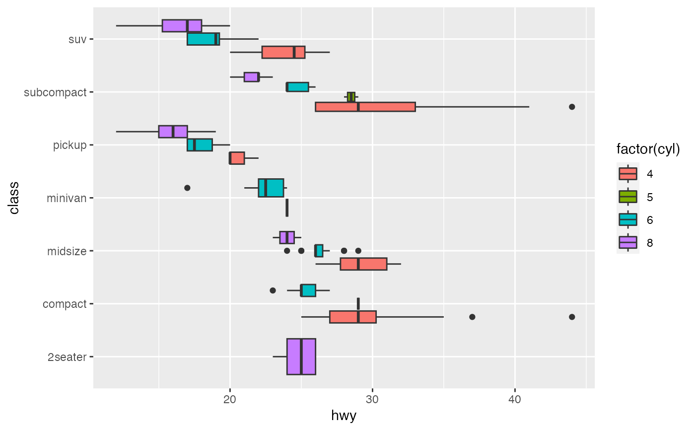
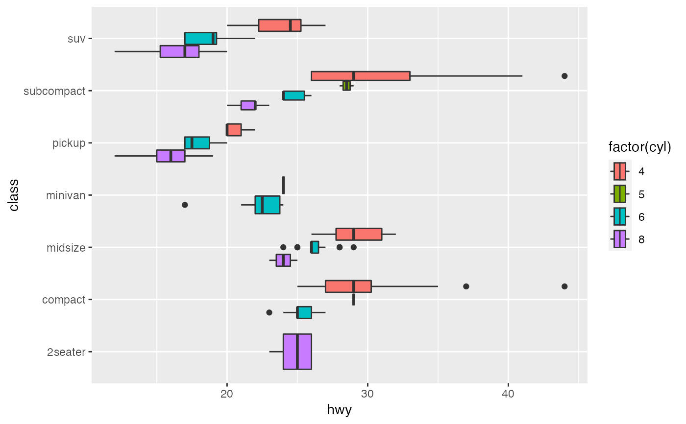
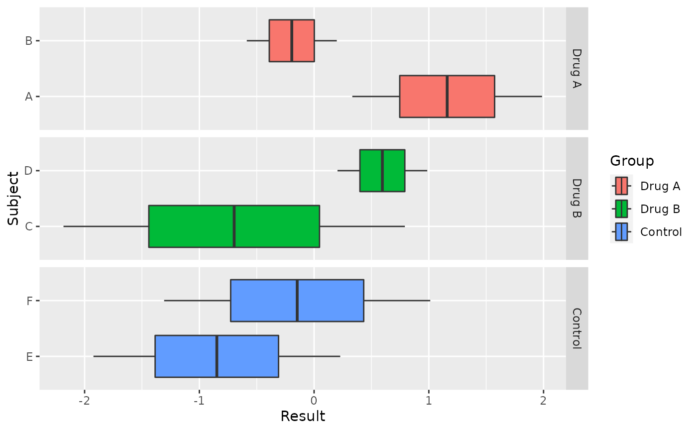

Horizontal version of geom_boxplot().
geom_boxploth(
mapping = NULL,
data = NULL,
stat = "boxploth",
position = "dodge2v",
...,
outlier.colour = NULL,
outlier.color = NULL,
outlier.fill = NULL,
outlier.shape = 19,
outlier.size = 1.5,
outlier.stroke = 0.5,
outlier.alpha = NULL,
notch = FALSE,
notchwidth = 0.5,
varwidth = FALSE,
na.rm = FALSE,
show.legend = NA,
inherit.aes = TRUE
)Set of aesthetic mappings created by aes() or
aes_(). If specified and inherit.aes = TRUE (the
default), it is combined with the default mapping at the top level of the
plot. You must supply mapping if there is no plot mapping.
The data to be displayed in this layer. There are three options:
If NULL, the default, the data is inherited from the plot
data as specified in the call to ggplot().
A data.frame, or other object, will override the plot
data. All objects will be fortified to produce a data frame. See
fortify() for which variables will be created.
A function will be called with a single argument,
the plot data. The return value must be a data.frame, and
will be used as the layer data. A function can be created
from a formula (e.g. ~ head(.x, 10)).
Use to override the default connection between
geom_boxplot and stat_boxplot.
Position adjustment, either as a string, or the result of a call to a position adjustment function.
Other arguments passed on to layer(). These are
often aesthetics, used to set an aesthetic to a fixed value, like
colour = "red" or size = 3. They may also be parameters
to the paired geom/stat.
Default aesthetics for outliers. Set to NULL to inherit from the
aesthetics used for the box.
In the unlikely event you specify both US and UK spellings of colour, the US spelling will take precedence.
Default aesthetics for outliers. Set to NULL to inherit from the
aesthetics used for the box.
In the unlikely event you specify both US and UK spellings of colour, the US spelling will take precedence.
Sometimes it can be useful to hide the outliers, for example when overlaying
the raw data points on top of the boxplot. Hiding the outliers can be achieved
by setting outlier.shape = NA. Importantly, this does not remove the outliers,
it only hides them, so the range calculated for the y-axis will be the
same with outliers shown and outliers hidden.
Default aesthetics for outliers. Set to NULL to inherit from the
aesthetics used for the box.
In the unlikely event you specify both US and UK spellings of colour, the US spelling will take precedence.
Sometimes it can be useful to hide the outliers, for example when overlaying
the raw data points on top of the boxplot. Hiding the outliers can be achieved
by setting outlier.shape = NA. Importantly, this does not remove the outliers,
it only hides them, so the range calculated for the y-axis will be the
same with outliers shown and outliers hidden.
If FALSE (default) make a standard box plot. If
TRUE, make a notched box plot. Notches are used to compare groups;
if the notches of two boxes do not overlap, this suggests that the medians
are significantly different.
For a notched box plot, width of the notch relative to
the body (defaults to notchwidth = 0.5).
If FALSE (default) make a standard box plot. If
TRUE, boxes are drawn with widths proportional to the
square-roots of the number of observations in the groups (possibly
weighted, using the weight aesthetic).
If FALSE, the default, missing values are removed with
a warning. If TRUE, missing values are silently removed.
logical. Should this layer be included in the legends?
NA, the default, includes if any aesthetics are mapped.
FALSE never includes, and TRUE always includes.
It can also be a named logical vector to finely select the aesthetics to
display.
If FALSE, overrides the default aesthetics,
rather than combining with them. This is most useful for helper functions
that define both data and aesthetics and shouldn't inherit behaviour from
the default plot specification, e.g. borders().
geom_boxploth() understands the following aesthetics (required aesthetics are in bold):
y
xlower
xupper
xmiddle
xmin
xmax
alpha
colour
fill
group
linetype
shape
size
weight
Learn more about setting these aesthetics in vignette("ggplot2-specs").
library("ggplot2")
#>
#> Attaching package: ‘ggplot2’
#> The following objects are masked from ‘package:ggstance’:
#>
#> GeomErrorbarh, geom_errorbarh
# With ggplot2 we need coord_flip():
ggplot(mpg, aes(class, hwy, fill = factor(cyl))) +
geom_boxplot() +
coord_flip()

# With ggstance we use the h-suffixed version:
ggplot(mpg, aes(hwy, class, fill = factor(cyl))) +
geom_boxploth()
#> Warning: The following aesthetics were dropped during statistical transformation: x.
#> ℹ This can happen when ggplot fails to infer the correct grouping structure in
#> the data.
#> ℹ Did you forget to specify a `group` aesthetic or to convert a numerical
#> variable into a factor?
#> Warning: Using the `size` aesthetic with geom_segment was deprecated in ggplot2 3.4.0.
#> ℹ Please use the `linewidth` aesthetic instead.
#> Warning: Using the `size` aesthetic with geom_polygon was deprecated in ggplot2 3.4.0.
#> ℹ Please use the `linewidth` aesthetic instead.

# With facets ggstance horizontal layers are often the only way of
# having all ggplot features working correctly, for instance free
# scales:
df <- data.frame(
Group = factor(rep(1:3, each = 4), labels = c("Drug A", "Drug B", "Control")),
Subject = factor(rep(1:6, each = 2), labels = c("A", "B", "C", "D", "E", "F")),
Result = rnorm(12)
)
ggplot(df, aes(Result, Subject))+
geom_boxploth(aes(fill = Group))+
facet_grid(Group ~ ., scales = "free_y")
#> Warning: The following aesthetics were dropped during statistical transformation: x.
#> ℹ This can happen when ggplot fails to infer the correct grouping structure in
#> the data.
#> ℹ Did you forget to specify a `group` aesthetic or to convert a numerical
#> variable into a factor?
#> Warning: The following aesthetics were dropped during statistical transformation: x.
#> ℹ This can happen when ggplot fails to infer the correct grouping structure in
#> the data.
#> ℹ Did you forget to specify a `group` aesthetic or to convert a numerical
#> variable into a factor?
#> Warning: The following aesthetics were dropped during statistical transformation: x.
#> ℹ This can happen when ggplot fails to infer the correct grouping structure in
#> the data.
#> ℹ Did you forget to specify a `group` aesthetic or to convert a numerical
#> variable into a factor?
